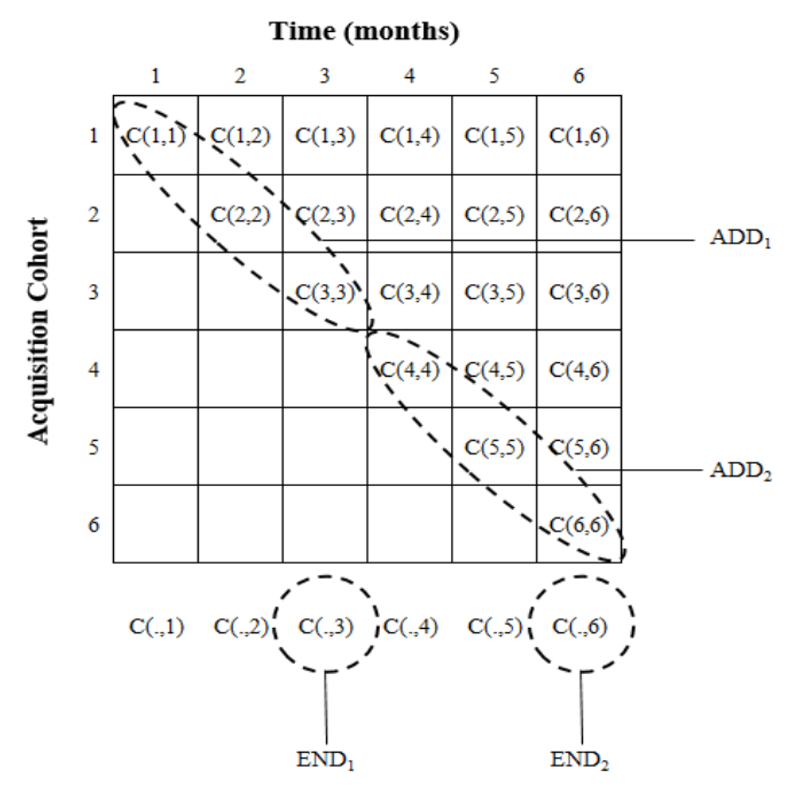
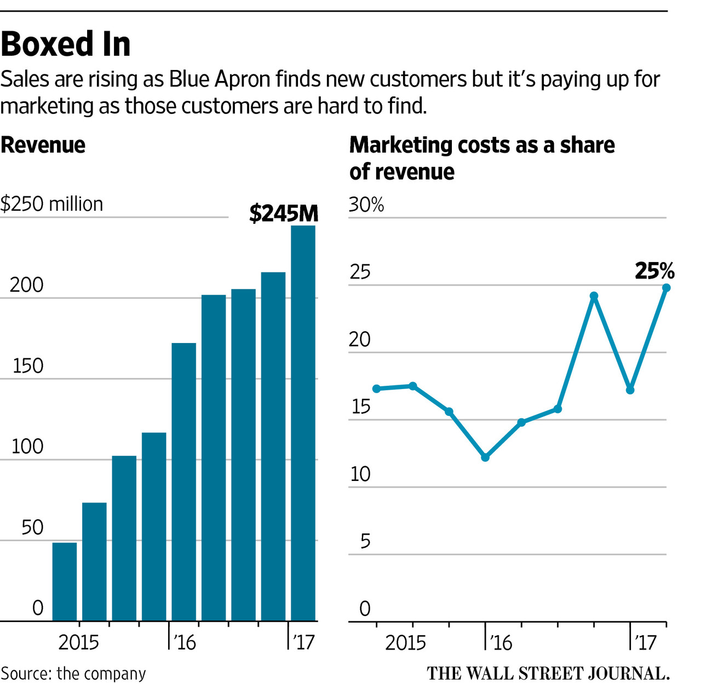
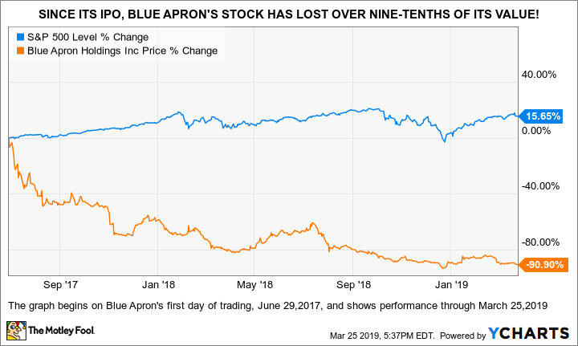
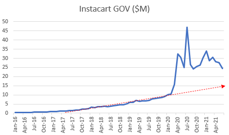
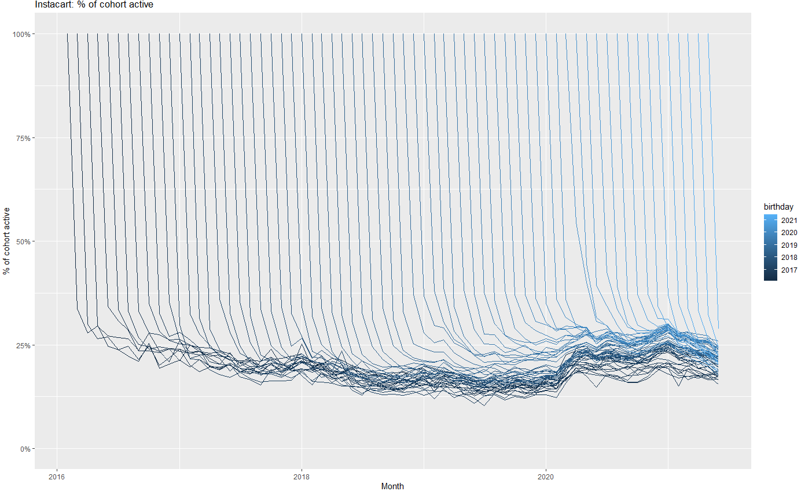
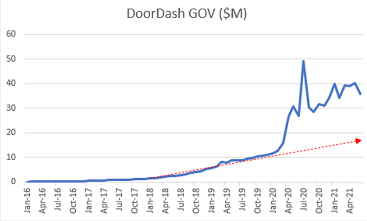
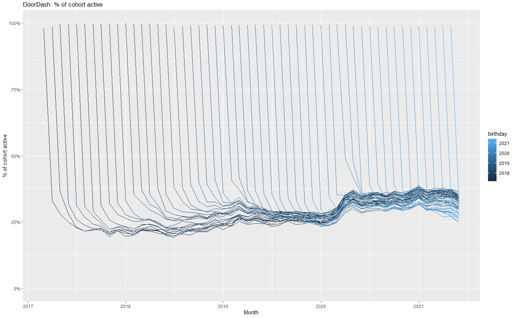
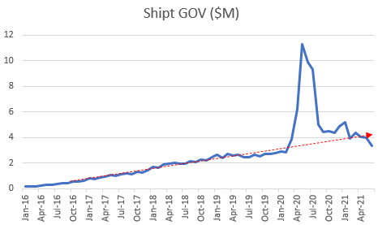
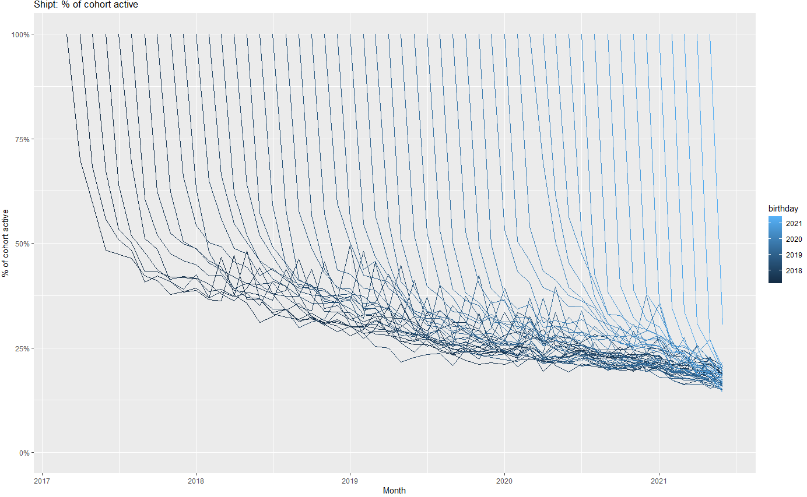

Marketing+Finance
UCSD MGT 100 Week 10
Let’s reflect
Quiz 9

Marketing+Finance
Customer-based corporate valuation
Credit card expenditure panels
Asset price game
AMA
Hi Finance, I’m Marketing
Finance/marketing crossovers
- Marketing policy effects on stock prices - ROI estimates & budgets (ads, sales, product launch, ...) - Customer opportunity evaluations & financial forecasts - M&A analyses, complementarities & market impacts - Behavioral finance AKA acknowledging that investors are humans and therefore subject to biases, perceptions, incomplete information, suboptimal behavior, etc - ...Yet disciplinary cultures differ
Current areas of opportunity
Corporate Valuation
Quantitative current valuation of a business
- True valuation is inherently subjective: Future is unknown, investors are heterogeneous - Yet we often need to assess value without a full sale, eg investment advice, M&A, settling a lawsuit, IPO pricing, approving a business loanTheoretical best way to measure: sell x% at auction
- But what if valuation changes with x? - Tough experiment to run, but demand usually slopes downCorpVal: Develops, applies models to value businesses
- Inherently stochastic, but ideally closer to appraisal than speculation - Mostly "solved" in the 1980s - Do results depend on who pays for the appraisal? Buyer, seller, 3rd party
Standard CorpVal Formulas
\[Shareholder Value_T=OA_T+NOA_T-ND_T\]
- \(T\) indicates current expectation given Today’s data
- \(OA_T\) is net present value of Operating Assets
- \(NOA_T\) is npv of Non-Operating Assets
- \(ND_T\) is net debt
Discounted Cash Flow (DCF) Model
\[ OA_T=\sum_{t=0}^{\infty}\frac{FCF_{T+t}}{(1+WACC_T)^t} \]
- \(WACC\) is the weighted average cost of capital
- \(FCF\) is Free cash flow, or net operating profit after taxes (NOPAT) minus change in capital expenditures and depreciation and amortization (D&A), minus change in nonfinancial working capital (\(\Delta\)NFWC):
\[ FCF_t=NOPAT_t-(CAPEX_t-D\&A_t)-\Delta NFWC_t \]
Discounted Cash Flow (DCF) Model
\[ NOPAT_t=[Rev_t*(1-AVC_t)-FC_t]*(1-TR_t) \]
- \(Rev\) is revenue
- \(AVC\) is average variable cost
- \(FC\) is fixed cost
- \(TR\) is corporate tax rate
Is this the best way?
Traditionally, analysts predict NOPAT based on past NOPAT:
\[ NOPAT_T = f(\{NOPAT_{T-t}\}_{t=1,...,T}) \]
Can we do better? Enter CBCV
- Start w subscription biz, since rev/cust is roughly constant
Core CBCV Idea
Firm strategies lie between two extremes:
Promote well: High CAC, high acquisition, high churn
- Tends to be expensive - Requires a large market to sustain (why?)Retain well: High retention, higher CLV, low CAC
- Tends to be higher $OA_T$, but slower acquisition (why?)
Customer data improve \(NOPAT_t\) forecasts by distinguishing promotion from retention, & better predict future churn
- Intentionally simplified. A biz could both promote & retain well, or neitherHence we should assume
\[ NOPAT_T = f(\{ACQ_{T-t},RET_{T-t}\}_{t=1,...,T}) \]
The C(.,.) Matrix
Let \(C(t,t')\) be the number of customers acquired in time \(t\) & still active in time \(t'\ge t\)
Firm can count customers \(C(t,t')\) for all pairs \((t<T,t'<T)\)
- Sophisticated companies monitor these data internally\(C(t,t)\) is simply customers acquired in period \(t\)
\(C(t,t')\) is weakly decreasing in \(t'\)
\(C(.,t)\) is all customers active at time \(t\)
- roughly proportional to $NOPAT_t$\(C(.,t)-C(.,t-1)\) is attrition at time \(t\)
Public firms report profits quarterly. CBCV advocates public reporting of
- customer acquisition by cohort
- customer attrition by cohort

What about transaction businesses?
CBCV extends to non-subscription businesses, but
- Customer attrition not directly observed - Purchase frequency varies across customers & time - Spending varies across customers & time - Cross-selling opportunities and takeup vary across customers & timeGreater variance and model uncertainty,
hence forecasts are more uncertain than subscription biz,
but likely more certain than NOPAT forecasts
Blue Apron in 2017

Blue Apron in 2019

Credit card expenditure panels
Anonynmous credit card expenditure data: Report
- Anonymous card ID - Merchant ID - Spend, timestamp, location, merchant categoryData are anonymized, but data fusion enables stochastic reidentification
Powerful implications for CBCV:
- You no longer need internal data to estimate C(t,t') - Investors can mine CC data for customer insights
Instacart Gross Order Value

Instacart Retention by Cohort

Doordash Gross Order Value

Doordash Retention by Cohort

Shipt Gross Order Value

Shipt Retention by Cohort

CBCV rollout
CBCV is slowly entering finance & accounting canon
- Firms increasingly experiment with reporting customer metrics (ThetaCLV) - Firms with high retention self-select into reporting it - Numerous firms have customer-level data available for reportingPrediction: A tipping point
- Should incentivize start-ups toward customer retention - Should make capital allocation more efficient - But, won't happen until enough investors demand it
Asset Price Game
You are VCs trading start-up shares (“assets”)
Each team starts with 3 assets and $20 cash
Teams can make money in 1 of 3 ways:
- Collect dividends
- Buy and sell assets
- Asset payouts at the end of the game
Richest team at the end gets extra credit
Play in teams of 5 : Form now & appoint a speaker
Trading rounds
- We will play \(n\) 2-minute rounds. Within each round :
- Trade assets/money in double Walrasian auction
- After trading, each asset pays its owning team $1 dividend
- After dividend, each asset goes bankrupt with 1/6 probability
After \(n\)th round, every surviving asset pays an extra $6
Trading
4 allowable trading statements:
- State a selling price: “Team (w) ASKS $a.bc”
- State a buying offer: “Team (x) BIDS $d.ef”
- Accept a selling price: “Team (y) ACCEPTS Team (w)’s ask”
- Accept a buying offer: “Team (z) ACCEPTS Team (x)’s bid”
Rules:
No more than 1 ASK or BID per team per round
No ASK more than the lowest open ask (why?)
No BID less than the highest open bid
You can only ask/bid/accept if you have the asset or cash to cover
Make a copy of this sheet to track team assets, cash, payouts
We track all trades for audit trail
Raise your hand & be recognized, then you can ask/bid/accept
Any questions?
Let’s play!
What was your team’s strategy?
What happened?
Why did that happen?
How might this connect to real financial markets?
Are you good at finance?

Recall that we bump the curve if 2/3 CAPEs completed
Upload a screenshot showing you completed your CAPE
Modeling: 1000’ view
Model: Simple representation of complicated phenomena
- We can't fully understand the phenomena - We can fully understand the model, but even this can be hardModeling is a superpower!
- You can understand, explain and predict things that others can't - Modeling skills develops with practice & transfer across domainsCautions
- Simple models are usually 85-95% effective - There is never a true model - Never mistake the model for the phenomena - "Model uncertainty" is always present - It's not "your" model - Beware modeling for the sake of modeling - All models assume; good models assume transparently - If it were true, we wouldn't call it an "assumption" - Anyone can tear down a model; improving a model is work
Ask Me Anything
Wrapping up
Homework
No assignment or quiz
Chat briefly about the final

Recap
- Corporate valuation uses past profits to predict future profits, without using granular customer metrics
- Customer-Based Corporate Valuation (CBCV) advocates reporting \(C(t,t')\) to enable investors to better predict profits
- CBCV is still small but growing, there are opportunities here
- Fundamentals help calculate asset prices

Going further
Customer-Based Corporate Valuation for Publicly Traded Noncontractual Firms
Decomposing Firm Value by Belo et al. (2021) for a competing perspective
What are the most important statistical ideas of the past 50 years?

THANK YOU
for your effort, attention, interest
for showing up every week
for working hard and staying patient
Please stay in touch!!